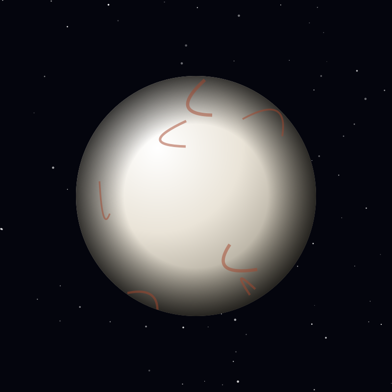

Moon
Europa
An icy Jovian moon hiding a global saltwater ocean beneath its shell — a leading candidate for life beyond Earth.
Object 08 of 26

Key facts
- Distance from Earth
- 779 million km (avg)
- Radius
- 1,561 km
- Surface gravity
- 1.31 m/s²
- Orbital period
- 3.55 days
- Surface temperature
- -160°C
- Ice shell
- 15-25 km thick
- Ocean depth
- ~100 km
- Discovered
- 1610, Galileo Galilei
Overview
Europa is the fourth-largest of Jupiter's moons and the smoothest solid surface in the solar system. Almost no impact craters scar its face, which means the ice is geologically young and constantly being renewed.
It is one of four Galilean moons Galileo Galilei discovered in 1610, a find that helped end the idea that everything orbits Earth.
The Ocean Beneath
Europa hides a global saltwater ocean under an ice shell 15 to 25 kilometres thick, holding perhaps 100 kilometres of depth — roughly twice the volume of all Earth's oceans combined.
The ocean stays liquid because Jupiter's gravity stretches and squeezes the moon as it orbits, generating heat through friction. Measurements of Europa's induced magnetic field by the Galileo spacecraft are the strongest evidence that a conductive, salty layer lies beneath the surface.
The Icy Surface
The surface is crossed by long reddish streaks called lineae, cracks in the ice that have opened and filled with material from below, some stretching thousands of kilometres. Elsewhere, ice blocks appear to have drifted and refrozen into chaotic terrain.
Those fractures, and the rusty colouring of the surface material, suggest the ocean is not sealed off — chemistry from the interior reaches the outside, which makes the surface a place to sample without ever digging.
Exploration
NASA's Galileo orbiter studied Europa through the 1990s, and Hubble reported possible water plumes erupting in 2012 and 2014. Juno flew past in September 2022, returning the closest images since Galileo.
Europa Clipper launched in October 2024 and will arrive at Jupiter in 2030 for a series of close flybys. Its instruments will measure the ocean, the ice shell and surface chemistry to answer a single question: is this world habitable.